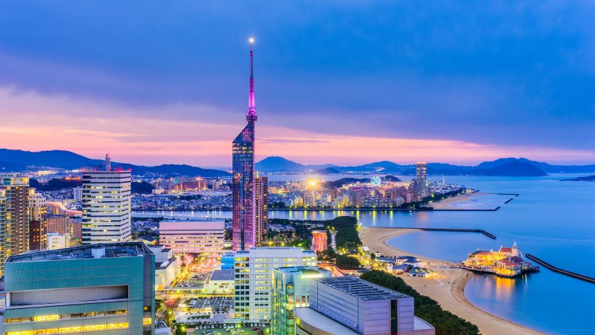
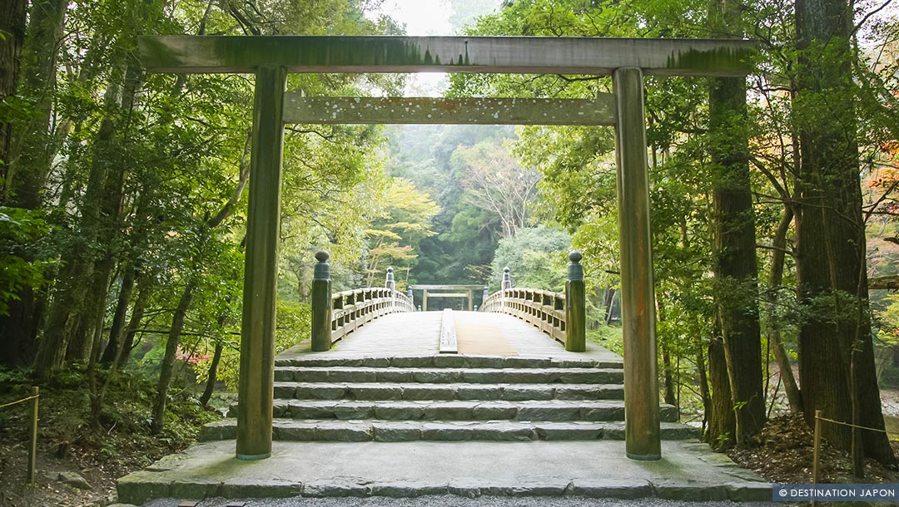

Culture Japonaise
Traditions

Cérémonie du thé, kimonos, festivals et arts ancestraux.
Modernité
Tokyo, anime, technologie avancée et culture pop.
Spiritualité
Temples, sanctuaires shinto et méditation zen.
Un voyage entre tradition, modernité et beauté naturelle. Décoouvrez ce magnifique pays qui mélange tradition, modernité et culture
Le Japon, surnommé le pays du Soleil Levant, est un pays fascinant où traditions anciennes et modernité se côtoient avec élégance. Sa culture millénaire se reflète dans ses temples majestueux, ses sanctuaires shinto, et ses jardins zen où la nature est mise en valeur avec soin.
Les Japonais accordent une grande importance aux coutumes, que l’on retrouve dans l’art du thé, la calligraphie, l’ikebana (art floral), ou encore dans le port du kimono lors des cérémonies et festivals.
La gastronomie japonaise, réputée dans le monde entier, va bien au-delà des sushis et ramen, et comprend une variété de plats raffinés qui mettent en avant la saisonnalité et l’harmonie des saveurs.
Les fêtes traditionnelles comme le Hanami, célébrant la floraison des cerisiers, ou le Matsuri, festival local rempli de musique et de danses, témoignent du lien fort entre les Japonais et leurs racines culturelles.
À côté de cela, les grandes villes comme Tokyo, Kyoto ou Osaka offrent un contraste saisissant, avec leurs technologies de pointe, leurs gratte-ciels impressionnants et une scène culturelle contemporaine dynamique. Ce mélange unique entre passé et présent, tradition et innovation, fait du Japon un pays captivant qui séduit autant par son esthétique que par sa richesse culturelle et humaine.
Cérémonie du thé, kimonos, festivals et arts ancestraux.
Tokyo, anime, technologie avancée et culture pop.
Temples, sanctuaires shinto et méditation zen.

Tokyo, capitale vibrante du Japon, est une ville où tradition et modernité s’entremêlent avec une harmonie unique. Entre ses gratte-ciels futuristes, ses quartiers lumineux comme Shibuya ou Shinjuku, et ses temples paisibles tels que Sensō-ji, la ville offre un contraste saisissant. Tokyo séduit par son énergie dynamique, sa culture riche, sa gastronomie reconnue dans le monde entier et son ambiance à la fois effervescente et accueillante. C’est une métropole fascinante qui ne cesse d’émerveiller ceux qui la découvrent.

Kyoto, ancienne capitale impériale du Japon, est un véritable trésor culturel où le temps semble s’être arrêté. La ville est célèbre pour ses temples millénaires, ses sanctuaires shinto, ses jardins zen et ses quartiers traditionnels comme Gion, où l’on peut parfois croiser des geishas. Avec son ambiance apaisante et son esthétique raffinée, Kyoto incarne l’âme authentique du Japon, entre spiritualité, élégance et traditions préservées.

Le mont Fuji, symbole emblématique du Japon, est une montagne majestueuse qui fascine par sa silhouette parfaite et sa présence apaisante. Culminant à 3 776 mètres, il attire voyageurs, artistes et pèlerins depuis des siècles. Entouré de lacs, de forêts et de paysages spectaculaires, le mont Fuji offre un panorama inoubliable, surtout lorsqu’il se pare de son manteau enneigé. Véritable icône naturelle, il représente la beauté, la force et la sérénité du pays du Soleil Levant.